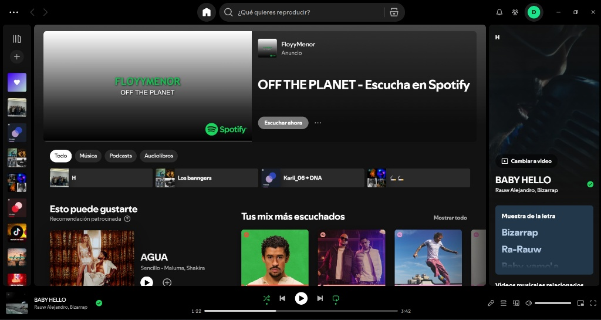
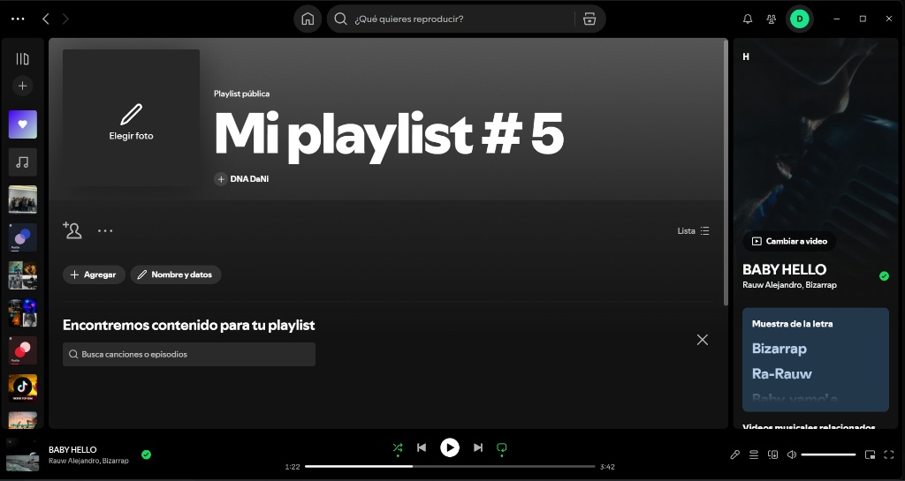

2. Current User Flow (Documented Experience)
Current Journey: Spotify Home → Click small "+" icon in collapsed sidebar → Select "Playlist" from 5-option menu → Land on auto-named "Mi playlist # 5" → Click "Nombre y datos" to rename → Scroll down to "Encontremos contenido para tu playlist" → Search artist → Click "Agregar" on each track individually.
Step 1: Locate the "+" Icon on the Home Screen

On the main screen, the left library sidebar is collapsed into small icons. The "+" button to create a playlist is tiny, lacks a text label, and blends into the dark gray background.
Step 2: Choose "Playlist" from a 5-Option Dropdown Menu

Clicking "+" opens a menu mixing 5 different features: "Playlist", "Playlist mixeada (Beta)", "Fusión", "Carpeta", and "Jam". Mixing folder organization and live listening rooms with playlist creation adds unnecessary cognitive load.
Step 3: Empty Playlist Created with Generic Name ("Mi playlist # 5")

Instead of asking for a name first, Spotify immediately generates an empty playlist titled "Mi playlist # 5". To customize it, the user must click "Nombre y datos" or "Elegir foto" to open another pop-up modal. Additionally, two different search bars appear on the same screen (top global search vs. bottom playlist search).
Step 4: Search and Click "Agregar" Song by Song

In the bottom section ("Encontremos contenido para tu playlist"), searching for an artist like Daft Punk displays results with individual "Agregar" buttons on the far right. There is no option to select multiple tracks at once, nor can the user see the playlist tracklist while scrolling down in the search results.